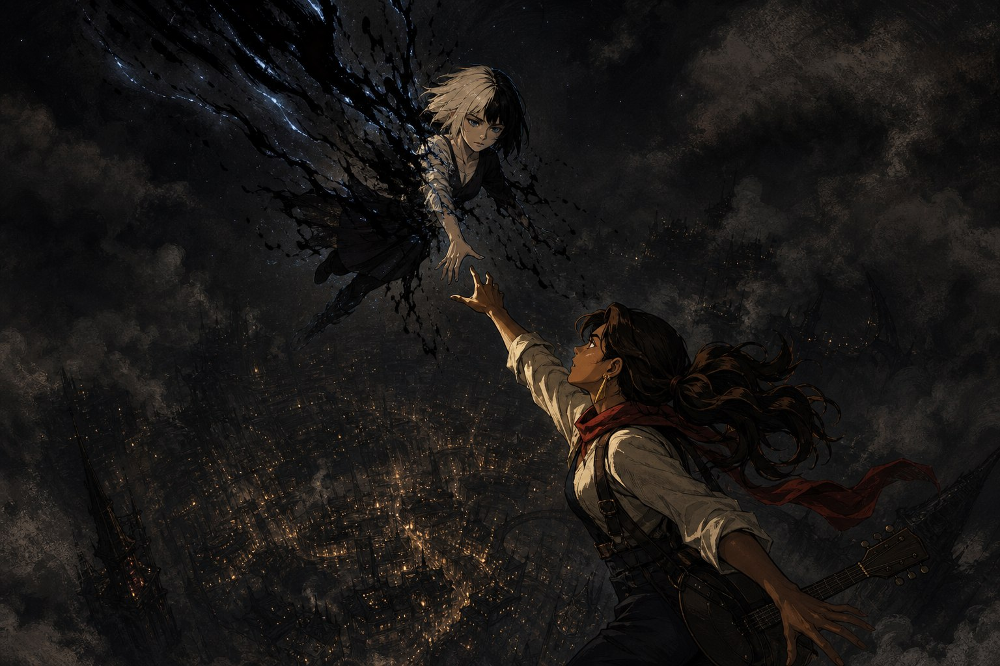

이 팀에서 날다다의 자리를 한 문장으로 말한 사람은 함께 PC를 굴린 직스다.
“항상 다다님의 캐릭터가 이야기에 감정의 레이어를 더해주는 덕분에 이야기가 풍부해져서 곁에서 PC를 굴리는 입장에서 무척 재미있습니다.” — 직스, 시즌5 캠페인 후기
정확한 말이다. 다만 그 일이 세션 안에서만 일어나지 않는다는 점이 이 사람을 설명하는 데 더 중요하다. 캐릭터에 애착이 생기면 그 애착은 매번 물건이 된다. 초상화가 되고, 악보가 되고, 3만 자짜리 후기가 된다.
담당한 PC들
| 캠페인 | PC | 플레이북·직책 |
|---|---|---|
| 어둠칼 시즌3 황혼의 전달자 | 시스터.S | 거미 |
| 어둠칼 시즌4 언체인드 | 브라더.Bee | 칼잡이 |
| 어둠칼 시즌5 로스트 앤 파운드 | 사이렌 | 유령사 |
| Relight (잿불 속의 군단) | 새벽빛 흐르는 어둠 / 붉은 발티야 | 정보관 / 의무병 |
| ErrorHeart (대거하트) | 판델라 | 드루이드 |
Relight에서는 신병 파르라니 흔들리는 샛별과 흙빛 갈기는 폭풍도 자주 데리고 나갔다.
시작은 늘 들뜸이다
시즌3 0화가 이 사람의 첫 정식 세션이다. 첫 후기의 첫 문단부터 톤이 정해져 있다.
“맨날 타이만이나 인터넷 뒤적거리면서 야매로 플레이하곤 했던 티알피지를 (…) 이렇게 진짜 제대로 플레이한다는 게 너무 감격스러워요.. 진짜 평생의 소원 이룬 기분입니다ㅠㅠ” — 본인, 시즌3 0화 후기
3년 뒤 시즌5 0화에서도 톤이 같다(“우히히 너무 신나서 (…) 폴짝폴짝 뛰는 중입니다..”). 평가는 빨랐다.
“다다님은 1화만에 만장일치 MVP까지.. 이런 티알 천재를 발굴할 수 있다면 팀이 터지는 것도 나쁘지 않군요(그건 아님).” — 마스터, 시즌3 1화 후기
취향을 다 담되, 플레이가 고쳐 쓰게 둔다

캐릭터 설계는 대체로 한 문장짜리 충동에서 출발한다. 시스터.S의 출발점은 이랬다.
“그래. 이 험난한 세상을 살아가려면 인성 따위 필요하지 않아. 점잖은 사회악을 만들자….! 교수! 그래 교수를 만드는거야…! 대학원생들을 마구 부려먹고 졸업은 시켜주지 않는 교수……!!” — 본인, 시즌3 캠페인 후기
그렇게 만들어 놓고 세션 내내 자기가 만든 것에 시달렸고(“매순간 노심초사하면서 (…) S야아아악!!! ,,,,,, 하게 만들었던 친구”), 다음 시즌에는 그 반동을 그대로 캐릭터로 만든다. 시즌3 내내 “다음엔 착한 애 낼거야ㅠㅠ”라고 말해 온 소원을 0세션에서 풀어 낸 “진짜 맑고 티없는 착한 애”가 브라더.Bee다.
Relight의 붉은 발티야도 같은 방법이다. “의무병 하면 희생적이고 여리여리한 이미지”라는 자기 안의 기본값을 먼저 적고, 그것을 뒤집어 “겉모습만 보면 의무병이 아니라 중전사 같은데…?” 싶은 탱커로 짰다. 취향을 숨기지 않는 대신 매번 한 겹 비틀어 두는 설계다. 그리고 이렇게 짠 캐릭터를 플레이가 도로 고쳐 쓰는 것을 마스터는 시즌3 총평의 핵심으로 꼽았다.
“처음에는 내가 여기에 있을 사람이 아니라는 듯이 이 사람 저 사람을 경멸하고 멸시하던 캐릭터가 점차 파티에 동화되고 행동의 목적을 찾아가는 모습이 좋았습니다.” — 마스터, 시즌3 캠페인 후기
준비의 밀도는 팀 안에서 일찍부터 별도의 기준선이었다. 시즌4 0화에서 에이포는 “날다다 님은 이전과 같이 거의 완성된 캐릭터 설정을 준비해 오셔서 역시나 싶었습니다. 준비성!”이라고 적었다.
애정이 물건이 되는 자리
PC 초상화는 직접 그린다. 자료를 뒤져도 원하는 그림이 안 나오면 “그래, 그냥 그리자…!” 하고 시작하는 쪽이라 브라더.Bee도 사이렌도 그렇게 나왔고, 그릴 때마다 “그림 실력 레벨업을 강제로” 했다고 적었다.
시즌5의 사이렌은 노래하는 유령사였다. 컨셉을 위해 음표와 음악 용어를 따로 공부해 스킬 연출에 붙였고, 악연인 NPC를 만나면 쓰려고 아껴 둔 의식을 위해서는 여기까지 갔다.
“이거 보세요… 저 이걸 위해서 작곡이랑 작사까지 했다구요…… (음질이 조금 울리고 구린 건 저희 집 오래된 피아노로 뚱땅거려서 그렇습니다…) (…) 퀠린이 나오든지 말든지 냅다 썼어야 했어요…” — 본인, 시즌5 캠페인 후기
그 곡은 끝내 세션에서 쓰이지 못했고, 대신 캠페인 후기에 음원 파일로 첨부돼 남았다. Relight에서 발티야가 왜곡증을 얻었을 때도 “변화를 꼭 티내야지 성이 차는 사람”이라 초상화를 새로 그리고 2차 창작을 붙였다. 세션에서 소모되지 않은 몫이 매번 어딘가에 물건으로 쌓인다.
팀의 기록을 떠맡은 구간
영상 챕터 나누기와 리플레이 정리는 이 사람이 자처한 일이다. 본인은 “어째서… 현실에서 사서관을 자처하고 있는지” 모르겠다고 농담처럼 적었지만, 팀에서는 그것이 실제로 인프라로 쓰였다.
“항상 영상을 못 돌려보는(진짜제목소리어케참죠..?) 저는 날다다님의 글을 읽으며 후기를 쓰곤 했었는데요. (…) 이 생태계를 모르는(?) 저는 그게 마스터님의 플레이 준비처럼 각자가 맡은 영역이 있는거라고 생각했어요. 알고보니 아니었죠?? 😮” — 팀원, Relight 캠페인 후기
분량 자체가 근거다. 시즌3 캠페인 후기는 5부작으로 나뉘어 합이 10만 자를 넘고 그중 한 편만 3만 자다. 시즌5에서는 후기를 다 쓴 뒤에 “클루와 프리야 그리고 S가 생각나고 썰이 풀고 싶어서” 두 번째 후기를 따로 파, 타임스탬프를 단 장면 인덱스와 인물 분석을 붙였다. 대가도 본인이 먼저 적어 뒀다. 시즌3 5부작의 마지막 문단이 그렇다.
“진짜 하고 싶은 말, 하고 싶은 거 다해야지…!!!!! 라는 마음으로 제 모든 에너지를 캠페인 내내 챕터와 후기에 쏟아 부었거든요… (…) 하고 보니까 제가 남아나질 않더라구요…..” — 본인, 시즌3 캠페인 후기
그 다음 줄은 “이젠 제 역량에 맞게 하고 싶은 거 다 하면서 약속도 잘 지키는 플레이어가 될 겁니다요!”다. 쏟아부은 것을 자랑으로 남기는 대신 페이스 문제로 바꿔 적었다.
가장 고전한 구간이 가장 많이 남긴 구간이다
Relight는 룰 결이 어둠칼과 크게 달라 본인이 가장 어려워한 캠페인이다. 정보관 직책과 의무병 룰의 부담을 여러 후기에 반복해 적는데, 그때마다 대처가 같이 붙는다. 직책이 생각보다 개인플레이가 됐다고 쓴 1화 후기는 “일단은 맡기도 맡았고 열심히 해보려고 합니다”로 닫히고, “하얗게 잿가루가 되어 날려가는 느낌”이라고 쓴 회차는 팀원들이 챙겨줘서 버틸 수 있었다는 말로 닫힌다. 결론은 이렇다.
“그러면 잿불 안 했을 때로 돌아가서 다시 할 거냐, 안 할거냐 고르게 해준다면 어떡할래? 하면 저는 또 한다고 할 것입니다. 너무나도 값진 경험이었어요.” — 본인, Relight 캠페인 후기
룰에 고전한 구간인데 캐릭터 쪽 결과는 정반대였다. 최종화의 한 장면을 마스터는 이렇게 읽었다.
“캠페인 내내 보아온 발티야의 성정에 대하여 모두가 잘 알고 있고, 그렇기 때문에 하필 발티야가 달려드는 것이 설명 없이도 무척 납득이 가는 일인 것이 그간 다다님의 캐릭터 빌드업 결과로 보여 일종의 캐릭터를 완성시키는 선언 같아서 좋았고요.” — 마스터, Relight 캠페인 후기
남의 PC를 대신 맡았을 때도 같은 밀도가 나왔다. 8화에서 바론 트레버를 대리 플레이한 것을 두고 팀원은 “경악할정도로 쟈키퐁님의 트레버에 대한 다다님의 캐해석이 철저하셨다”고 적었다.
마지막 시즌, 그리고 그 다음
시즌5의 사이렌에 대해 마스터가 남긴 평은 캠페인 전체의 마지막 선택에 걸려 있다.
“에스터를 구하기 위해 뛰어내린다면 그건 사이렌이 아닐까 하는 생각은 들었거든요. 에스터를 미워할만한 이유는 많은데, 그럼에도 사이렌은 끝내 에스터를 미워하지 못했으니까요.” — 마스터, 시즌5 최종화 후기

같은 시즌 4화에서 시즌3의 시스터.S가 카메오로 돌아왔을 때 직스는 “시스터.S의 말투가 정말 다다님이 치고 있는 것 같다는 느낌이 들 정도로 사소한 부분들까지 신경써서 묘사하셔서” 반가움이 배가됐다고 적었다. 2년 전에 놓은 캐릭터가 말투 단위로 남아 있었다는 뜻이다.
이어진 ErrorHeart에서는 그 자리가 아예 구조적으로 필요해졌다. 중심 NPC 에일라가 감정이 없었다.
“에일라는 감정을 표현하지 않는게 아니라 정말로 감정이 없어서 아무런 반응이 없는 것인데, 판델라는 그럼에도 매번 적절한 RP를 해주어서 좀 더 세션 전체 묘사 면에서 좀 더 리치한 묘사가 되었던 것 같습니다.” — 마스터, ErrorHeart 캠페인 후기
남을 오래 들여다보고 길게 적는다
이 사람의 캠페인 후기는 팀원 PC마다 절을 따로 판다. 시즌3의 종알이, Relight의 도베르트·트레버· 들판·바람, 시즌5의 셰프·오프너가 전부 그렇다. 그 절들은 상찬이 아니라 관찰이다.
“종알이는 저한테 플레이하는 내내 처음부터 끝까지 잔뜩 긴장하고 있었던 플레이어를 웃게 해주고, 긴장을 풀고 자연스럽게 세션에 참여할 수 있게 해 준 PC였어요.” — 본인, 시즌3 캠페인 후기
그 습관 덕분에 이 저장소에는 다른 플레이어들에 대한 1차 기록이 남았다. 팀의 인물들을 지금 읽을 수 있는 상당 부분이 이 사람이 그때그때 적어 둔 문장들이고, 감정의 레이어를 얹는다는 것은 결국 남을 오래 들여다본다는 뜻이기도 했던 셈이다.
5년 44세션의 어둠칼을 닫으면서 마스터가 감사 명단에 적은 한 줄이, 시즌3 중간 합류자에 대한 결산으로는 가장 짧고 정확하다.
“시즌 3부터 합류해서 캠페인의 퀄리티 업에 큰 힘을 주신 다다님” — 마스터, 시즌5 캠페인 후기
근거는 본인이 쓴 어둠칼 후기 38편과 Relight·ErrorHeart 후기, 그리고 팀원·마스터의 후기다. Relight와 ErrorHeart는 작성자 귀속표가 없어 본문 근거로 판단했고, 확정하지 못한 인용은 “팀원”으로만 밝혔다. 2세션 만에 끝난 시즌4는 브라더.Bee에 대한 마스터의 총평이 남지 않아 0화·1화까지만 다뤘다.